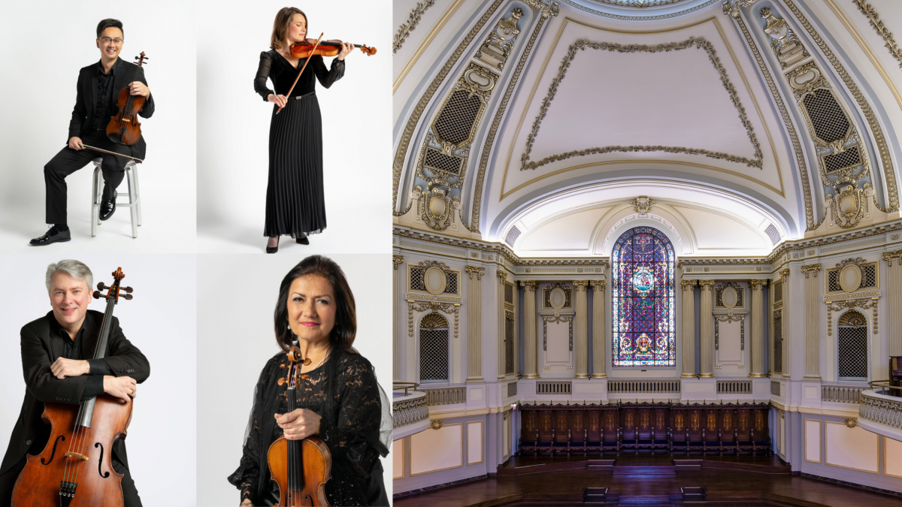
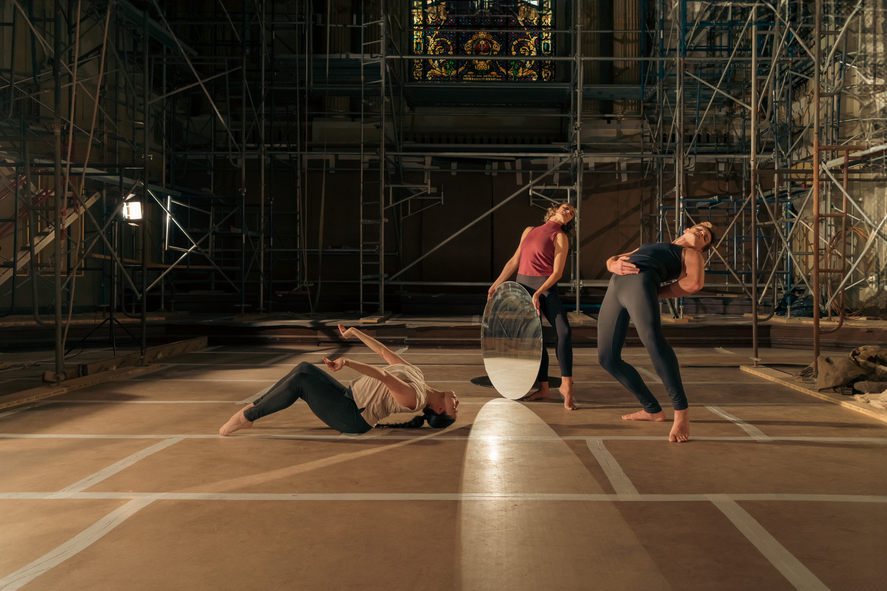
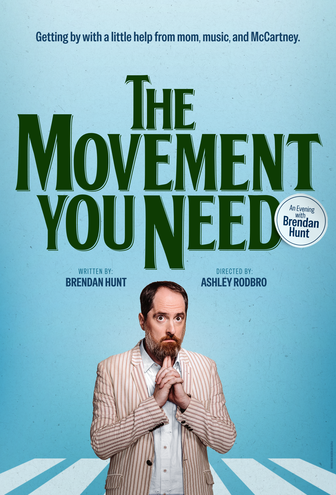
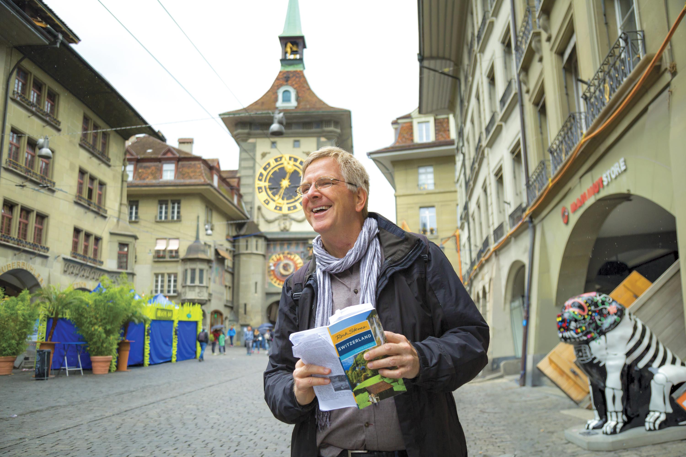
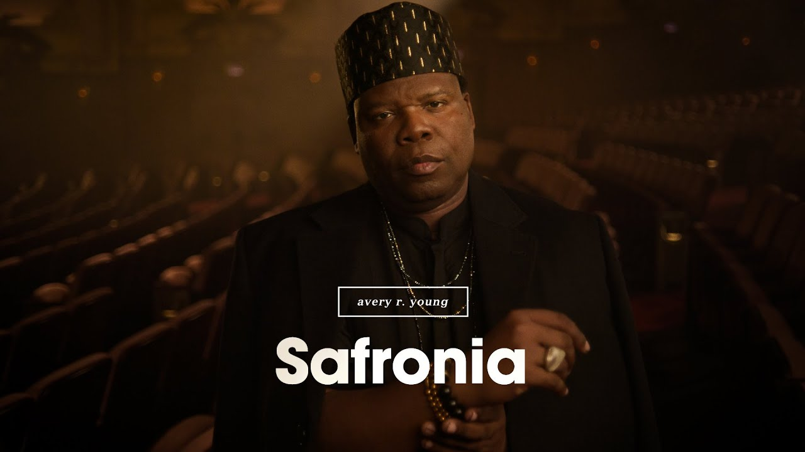

UNESCO and UNESCO Goodwill Ambassador Herbie Hancock (a Chicago native) and his Herbie Hancock Institute of Jazz have partnered with the Chicago Jazz Alliance, the City of Chicago, the Illinois Arts Council, Ravinia Festival, the State of Illinois, and others to develop programming. April is also Jazz Appreciation Month.
The final concert of the Chicago Chamber Music Society's 90th season is a performance by The Euclid Quartet with cellist Adrian Daurov at a private club on Michigan Avenue on April 25, followed by an optional dinner. That same evening, the Patrick F. and Shirley W. Ryan Opera Center presents "Rising Stars in Concert" at the Lyric Opera House. I attended Haymarket Opera Company's annual benefit for the first time last year as a guest. It was so much fun, I already have my reservation for their Early Opera Cabaret gala on April 30 at the Arts Club of Chicago.

The Driehaus Museum and Chicago Symphony Orchestra Association have partnered together to present a chamber concert series that kicks off on April 28 with "The Art of Expression" in the museum's Marshall and Fox-designed Murphy Auditorium (1926).

Brendan Fernandes is the Driehaus Museum's first artist-in-residence. The world premiere performance of "Brendan Fernandes: Score for Murphy Auditorium" on April 10 is just part of the museum's programming in conjunction with "Brendan Fernandes: In the Round" (April 9–November 14), which continues the museum's "A Tale of Today" series that juxtaposes contemporary art with the art of the Gilded Age.
Navy Pier's Festival Hall is the place to go this spring to view contemporary art. The 13th anniversary edition of EXPO CHICAGO runs April 9–12 with over 130 galleries from the United States and around the world, and talks, on-site installations and special events. The Museum of Contemporary Art Chicago's Women's Board hosts a Vernissage 2026 brunch on opening day, April 9, that supports the museum's learning programs.
In contemporary theater, Chicago Shakespeare Theater presents the world premiere of Scooter Pietsch's dark comedy "Fault" April 18–May 24 with a cast that includes Enrico Colantoni and Teri Hatcher. Steppenwolf Theatre Company presents the world premiere of ensemble member Tarell Alvin McCraney's "Windfall" running April 9–May 31. If "Windfall" is successful in Chicago, it might head to Broadway as many of Steppenwolf's productions have. McCraney co-wrote the screenplay for the 2016 film "Moonlight," based on his own play, and received an Academy Award for Best Adapted Screenplay.

Brendan Hunt, the Emmy and SAG Award-winning co-creator and star of "Ted Lasso," performs his one-man show "The Movement You Need: An Evening with Brendan Hunt" about growing up in Chicago at Steppenwolf Theatre Company, April 19–May 10.

The Chicago Humanities Spring Festival continues through June 28. April's highlights include: "R.F. Kuang in Conversation" at First United Methodist Church at the Chicago Temple on April 11; "Michael Pollan: A World Appears" at Francis W. Parker School on April 15; and travel writer and TV host Rick Steves presents "Rick Steves: On the Hippie Trail" at Parker on April 20.
April 18 is Bridgeport Day with more than a dozen events including: bestselling author Dr. Ibram X. Kendi & Mayor Brandon Johnson at the Ramova Theatre; Bridgeport bus tours with Shermann Dilla Thomas; and "Brick of Chicago" walking tours with Will Quam. Chicago is famous for its bricks and the publication date for Quam's new book Fire and Clay: How Bricks Reveal the Hidden History of Chicago (The University of Chicago Press) is April 23.
On the big screen, Access Contemporary Music presents the 21st annual Sound of Silent Film Festival at the Music Box Theatre on April 8 featuring new short silent films accompanied by newly-composed musical scores performed live. The 36th annual Onion City Experimental Film Festival at Chicago Filmmakers is April 9–12. The 42nd annual Chicago Latino Film Festival runs April 16–27 at the Landmark Century Centre Cinema. The 11th annual Doc10 Film Festival at the Davis Theater runs April 24–May 10. The screenings at this all-documentary film festival range from "Give Me the Ball!" about tennis legend Billie Jean King to "The Last Republican" about Adam Kinzinger, the former U.S. representative from Illinois.
You can also see the latest films from Chicago's future filmmakers at the "Team Deakins: Athenaeum Center's Film and Culture Festival" April 11 and 13. Filmmakers from Columbia College, DePaul University, Loyola University and the School of the Art Institute compete in the Deakins Collegiate Short Film Contest Finals. The festival also includes film screenings and other programming.

It's National Poetry Month. Chicago is not only a jazz mecca, it's also a poetry mecca. On April 23, the Poetry Foundation hosts a reading celebrating 2021 Ruth Lilly Poetry Prize recipient and Chicago native Patricia Smith's new book "The Intentions of Thunder: New and Selected Poems," which won the 2025 National Book Award for Poetry. The Chicago Public Library celebrates National Poetry Month with dozens of workshops, performances and discussions. The Chicago Public Library Foundation presents a day of poetry with its 27th annual Poetry Fest at the Harold Washington Library Center on April 25. The keynote speaker is Chicago Poet Laureate Mayda del Valle. The Lyric Opera of Chicago presents the world premiere of the musical work "safronia," written by Chicago's first Poet Laureate avery r. young, at the Lyric Opera of Chicago, April 17–18.
The Newberry Library celebrates the 250th anniversary of the United States with "Free and Independent: The Declaration of Independence and the Words That Made the United States," an exhibition that runs from April 9–July 18. Among the more than two-dozen historic items on display are a rare early copy of the Declaration of Independence and the only surviving manuscript copy of Jay's Federalist No. 3.
The Chicago Cubs are celebrating their 150th anniversary. The team's first National League game was April 25, 1876.
Get your tickets now for the "Icons & Innovators: Honoring Joan W. Harris" concert and gala on May 2 at the Harris Theater, home to nearly thirty Chicago-based performing arts organizations. Emmanuel Ax and Midori are just a few of the scheduled performers. That same evening is the "Come As You Aren't Ball — A Celebration of Costume Design to Benefit Lookingglass Theatre Company" at Morgan Mfg. Founding Ensemble Member David Schwimmer and Board Member Nancy Ali are the co-chairs of the event.
Dates, times, locations and availability are subject to change.